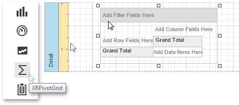
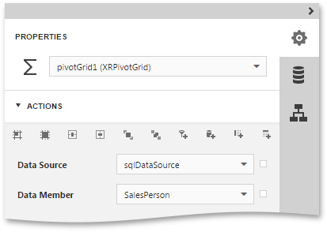
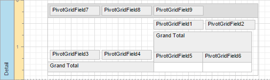
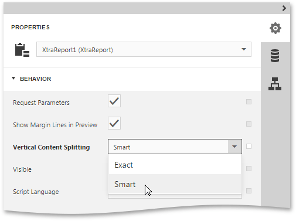
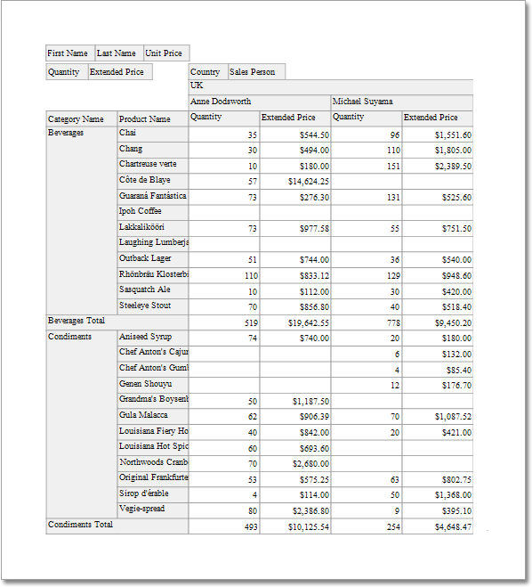

Cross-Tab Report
This tutorial describes the steps to create a cross-tab report using a Pivot Grid that calculates automatic summaries and grand totals across a large number of grouped rows and columns. This feature should not be confused with the master-detail report or table report.
To create a cross-tab report, do the following.
- Create a new report and bind it to a data source.
Drop the Pivot Grid control from the Toolbox onto the report's Detail band.

To bind the Pivot Grid to a data source, in the Properties Panel, expand the Actions or Data category and specify the Data Source and Data Member properties. The Data Member property defines from which table or view of your dataset the grid obtains its data.

Note
Since you have placed the Pivot Grid in the Detail band, the report's Data Source property should be set to None. Otherwise, the Pivot Grid will repeated at the preview as many times as there are records in the data source.

To add a field to the particular grid area, expand the Actions category and click one of the following buttons.
Icon Description Adds a field to the Column Header area. This field's values will represent column headers. Adds a field to the Row Header area. This field's values will represent row headers. Adds a field to the Data Header area. The summaries will be calculated for all the cells, each cell is identified by a specific column and row. Adds a field to the Filter Header area. This field is available for further customizations. Add two column fields, two row fields and two data fields, using these buttons. You can also add several filter fields. The image below illustrates the updated grid, which reflects the newly added fields.

To adjust a Pivot Grid field, switch to the Properties Panel, expand the Report Controls drop-down list and select the required grid field. In the Data category, specify the Data Column Name property to bind a grid field to a data source field.

You can also specify the field position, using the Area property or change the order of fields within their area, specifying the Area Index property. If required, it is possible to customize many other properties for the Pivot Grid and its fields.
On the last step, you can set your report's Vertical Content Splitting option to Smart. This will split the grid's columns precisely by their borders in the Print Preview.

The cross-tab report is now ready. Switch your report to the Preview mode and view the result.
